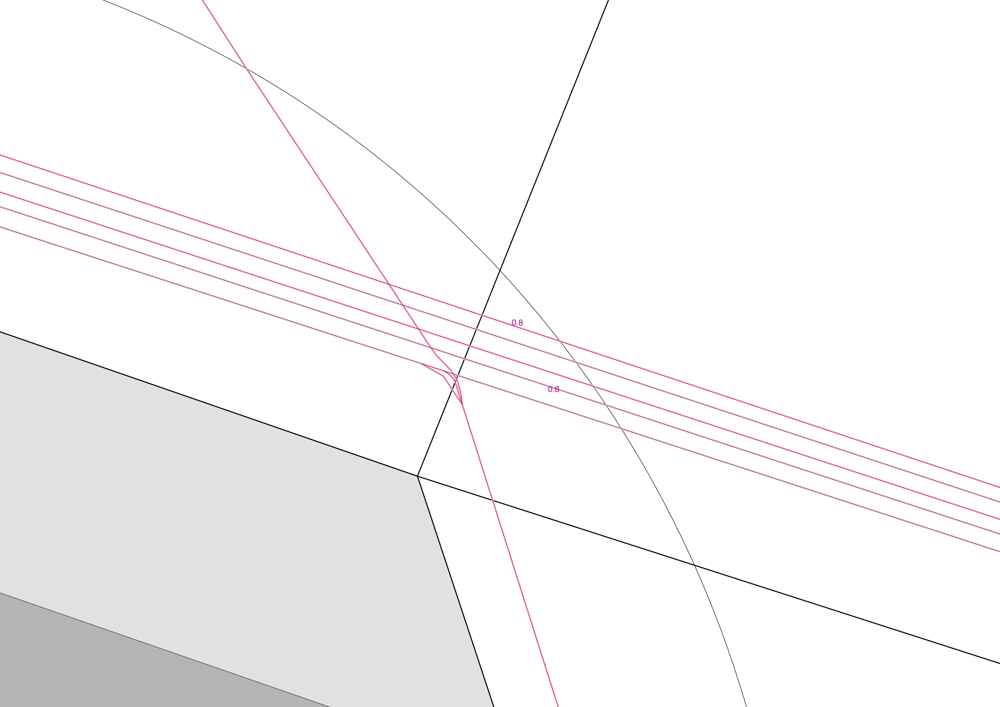
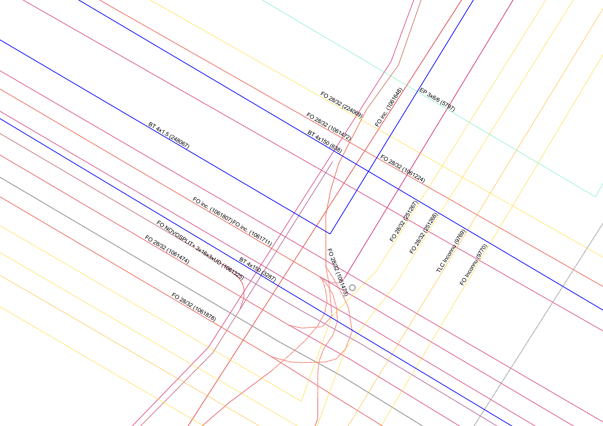
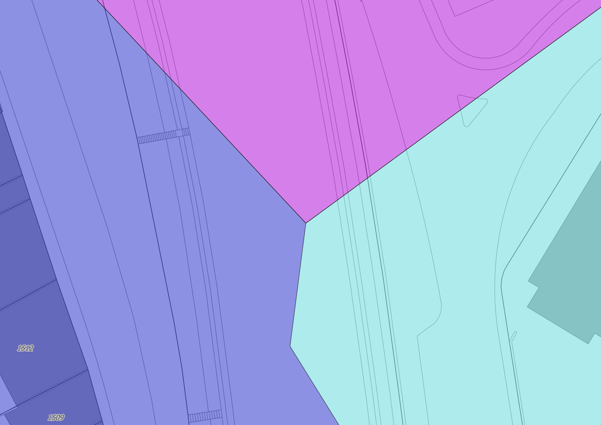
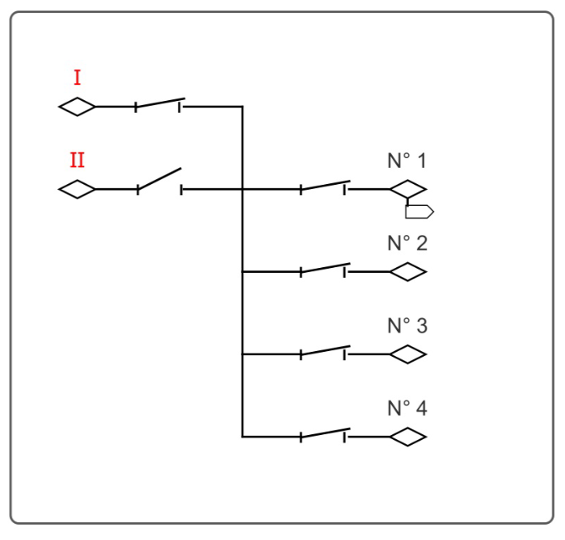
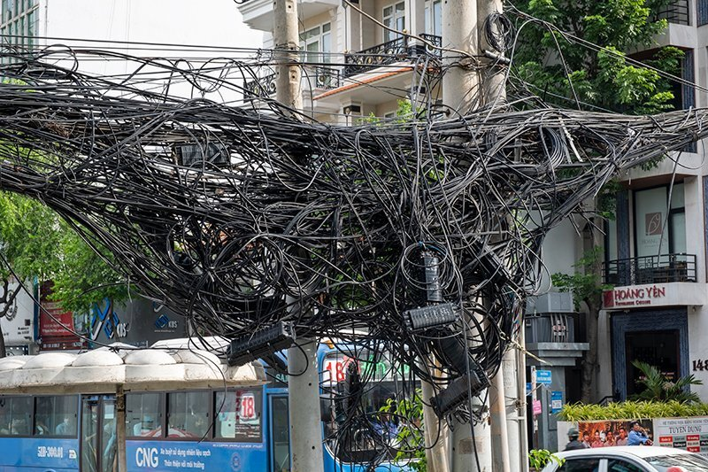
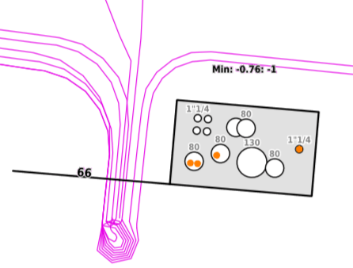
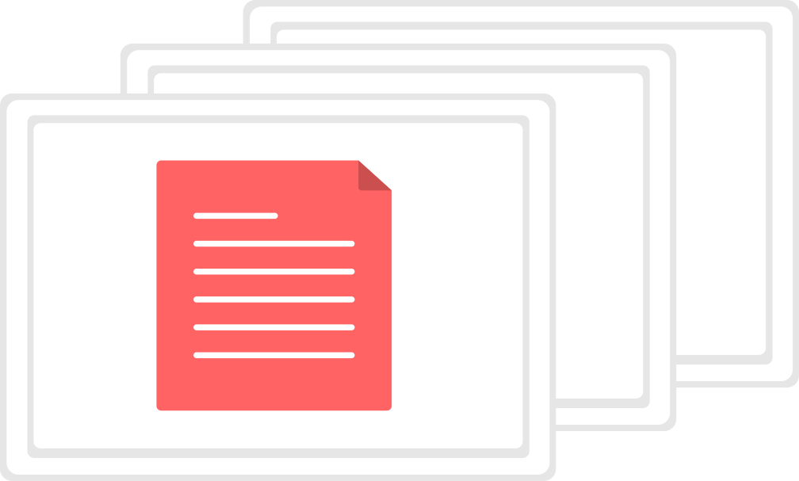
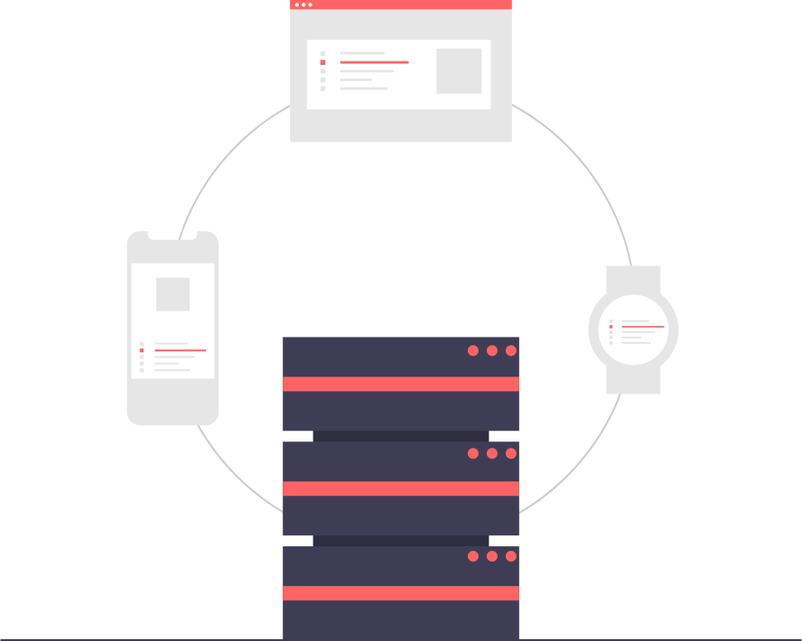

Tracés
Saisie et consultation des données géométriques du réseau à l'aide du logiciel Open Source QGIS

Géoschématique
Générer la représentation des tubes et des câbles.

Poursuite de tension
De la source au client ou vice versa.

Schéma des stations
Au bureau ou sur le terrain, consultez et actualisez les connexions de câble dans les stations.

Gestionnaire de câbles
Gérez l'organisation des câbles dans les tubes.

Coupes
Créez et visualisez les profils en travers de votre réseau.

Documents
Documentez votre réseau à l'aide de documents et générer des atlas à partir des données du réseau.

Interfaces
Connectez kablo à vos applications tierces de façon sûr, rigoureuse et durable.
